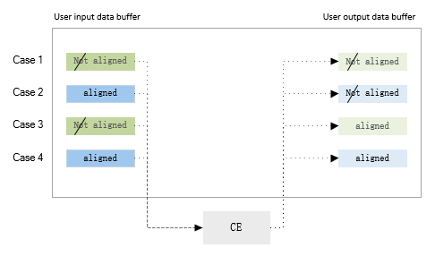

关键流程设计
初始化流程
aic_crypto_probe(pdev);
|-> ce_dev->base = devm_platform_ioremap_resource(pdev, 0);
|-> ret = devm_request_threaded_irq(dev, irq, aic_crypto_irq_handler,
| aic_crypto_irq_thread, IRQF_ONESHOT,
| dev_name(dev), ce_dev);
|-> ce_dev->clk = devm_clk_get(dev, NULL);
|-> clk_prepare_enable(ce_dev->clk);
|-> ce_dev->reset = devm_reset_control_get(dev, NULL);
|-> reset_control_assert(ce_dev->reset);
|-> reset_control_deassert(ce_dev->reset);
|-> aic_crypto_skcipher_accelerator_init(ce_dev);
| |-> eng = crypto_engine_alloc_init_and_set(ce->dev, true, NULL, true,
| | ACCEL_QUEUE_MAX_SIZE);
| |-> kfifo_alloc(&ce->sk_accel.req_fifo, ACCEL_QUEUE_MAX_SIZE, GFP_KERNEL);
| |-> crypto_engine_start(ce->sk_accel.engine);
| |-> crypto_register_skcipher(&sk_algs[i].alg);
|
|-> aic_crypto_akcipher_accelerator_init(ce_dev);
|-> aic_crypto_hash_accelerator_init(ce_dev);数据处理流程
由于 CE 中几种类型算法的数据处理流程相似，这里仅以对称密钥算法的数据处理流程为例进行说明。
在处理步骤上，各种算法都遵循标准化的几个步骤：
-
从 Crypto Core 层将处理请求传递给 CE 算法
-
CE 算法处理函数将请求转交给(transfer)给对应加速器的 crypto_engine 队列
-
crypto_engine 中的处理线程从队列中取出请求，调用对应的 prepare/do_one_req 进行处理
-
do_one_req 回调函数中，将对应的请求交给硬件处理
-
在中断处理函数中，取出结果，返回给调用者
aic_skcipher_aes_ecb_encrypt(req);
|-> aic_skcipher_crypt(req, FLG_AES | FLG_ECB);
|-> crypto_transfer_skcipher_request_to_engine(eng, req);
crypto_engine
|-> aic_skcipher_prepare_req(engine, req);
|-> aic_skcipher_do_one_req(engine, req);
|-> aic_crypto_enqueue_task(ce, algo, rctx->phy_task);
aic_crypto_irq_thread(int irq, void *arg);
|-> aic_skcipher_handle_irq(ce_dev);
|-> crypto_finalize_skcipher_request(ce->sk_accel.engine, req, err);
|-> aic_skcipher_unprepare_req(engine, req);
|-> req.complete(req, err);除了上述的大处理流程，还有一个关键点需要注意，就是 数据的对齐处理 。用户发起数据处理请求时， 提供了输入和输出的数据缓冲区，然而这些数据缓冲区对 CE 而言有两个问题：
-
这些缓冲区是虚拟地址空间的内存，并不一定是物理连续的内存空间
-
缓冲区的开始地址并不一定是对齐的，不一定满足 CE 的地址对齐要求
因此需要对输入和输出的数据做一些处理。
一个简单的处理方式是对输入和输出的数据，一律复制到驱动新申请的物理连续的缓冲区中， 使用该空间作为 CE 的硬件工作缓冲区，处理完成之后再复制到用户提供的输出缓冲区。 但是对每一笔数据都会有额外的两次数据拷贝操作，对于处理大量数据的应用场景，效率较低。
为了兼顾数据处理效率，CE 驱动针对可能出现的情况，做了几个分类， 原则上尽量避免数据拷贝 。
-
输入缓冲区和输出缓冲区 CE 都无法使用
此种情况 CE 驱动为输入和输出缓冲区分配物理连续的工作缓冲区，并且需要对输入和输出数据进行复制。
-
输入缓冲区 CE 可用，输出缓冲区 CE 不可用
此种情况 CE 驱动为输出缓冲区分配物理连续的工作缓冲区，CE 将数据处理完成之后，再复制到用户提供的输出缓冲区。
-
输入缓冲区 CE 不可用，输出缓冲区 CE 可用
此种情况 CE 驱动为输入缓冲区分配物理连续的工作缓冲区，CE 驱动先将输入数据复制到工作缓冲区， 再启动 CE 处理，直接输出到输出缓冲区。
输入缓冲区和输出缓冲区都是 CE 可用
此种情况效率最高，CE 直接使用用户提供的输入输出缓冲区。

当用户处理大量数据时，为了提高系统的处理效率，应为输入和输出数据申请按页对齐的缓冲区，这样 CE 驱动可以直接使用，避免额外的复制操作。
中断处理流程
CE 驱动的中断处理比较简单，采用线程化的 IRQ 处理方式实现。
static irqreturn_t aic_crypto_irq_handler(int irq, void *arg)
{
struct aic_crypto_dev *ce_dev = arg;
ce_dev->irq_status = readl(ce_dev->base + CE_REG_ISR);
ce_dev->err_status = readl(ce_dev->base + CE_REG_ERR);
writel(ce_dev->irq_status, ce_dev->base + CE_REG_ISR);
return IRQ_WAKE_THREAD;
}static irqreturn_t aic_crypto_irq_thread(int irq, void *arg)
{
struct aic_crypto_dev *ce_dev = arg;
if (ce_dev->irq_status & (0x1 << DMA_CHAN_SK_ACCELERATOR))
aic_skcipher_handle_irq(ce_dev);
if (ce_dev->irq_status & (0x1 << DMA_CHAN_AK_ACCELERATOR))
aic_akcipher_handle_irq(ce_dev);
if (ce_dev->irq_status & (0x1 << DMA_CHAN_HASH_ACCELERATOR))
aic_hash_handle_irq(ce_dev);
return IRQ_HANDLED;
}aic_skcipher_handle_irq(ce_dev);
|-> crypto_finalize_skcipher_request(ce->sk_accel.engine, req, err);
|-> aic_skcipher_unprepare_req(engine, req);
|-> req.complete(req, err);